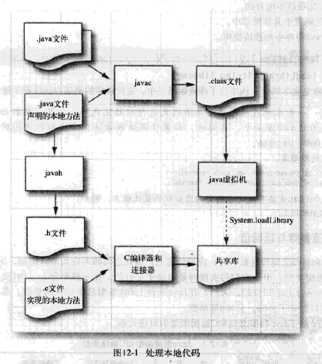

一.从java程序中调用C函数
java使用native关键字来修身一个本地方法
开发流程如下：
1.在java代码中声明一个本地方法（native关键字）
2.运行javah以获得包含该方法的C声明的头文件（使用javah工具 用法：javah 相对路径的类名）
3.用C实现该本地方法
4.将代码置于共享库中 （打包一个库，windows平台是dll，linux是so）
5.在java程序中加载该共享库（可将共享库放置在操作系统库、jre库、项目路径或者使用-Djava.library.path=共享库路径
在静态代码块中使用System.loadlibrary(共享库名称)来加载）
jni的开发和调用流程图解

java本地方法和C方法的命名原则

C++编译器注意事项
可以使用不使用C++来实现本地方法，但是必须将本地方法的声明使用如下形式：
extern "C”{方法声明}
只有这样才能阻止C++编译器生成C++特有的代码
在共享库初始化和虚拟机关闭时执行代码
实现如下两个函数：
//当共享库被加载时调用
JNIEXPORT jint JNICALL JNI_OnLoad(JavaVM* vm, void* reserved);
//当虚拟机关闭时调用
JNIEXPORT jint JNICALL JNI_OnLoad(JavaVM* vm, void* reserved);
JNI_OnLoad需要返回它所支持的最低的jni版本。eg:JNI_VERSION_1_6
二.数值参数和数值返回值
C和java之间函数交互，数字类型必须要有正确的对应关系，因为java平台独立性，其每个数据类型所占字节都是一定的，但C编译器并没有规定数字类型的位数，因此jvm使用typedef定义了和java交互的数字类型（jint,jdouble等），对应关系如下：

三.字符串参数
java中的字符串是UTF-16编码的字符序列
C的字符串是以NULL结尾的字节序列
故两种语言中的字符串很不一样，互相转换需要使用一些转换操作，因为java中的字符串是不可变的，所以要和java交互的字符数组或者指针都必须是const类型
jni接口当中，有两种操作字符串的函数：
1.把java字符串=>UTF-8字节序列，实际上就是转换成byte数组，适合使用ASCII的C代码
2.java字符串与=> UTF-16数值的数组，实际上就是转换成jchar数组，适合使用Unicode的C代码


四.获取class
通过类名获取class
jclass FindClass(const char *name);
通过jobject获取class
jclass GetObjectClass(jobject obj);
注意：
类引用只在本地方法返回前有效。因此不能在代码中缓存GetObjectClass和FindClass的返回值。不要将类引用保存下来供以后的方法调用时使用，尽量在每次方法调用时重新获取class。如果实在要做可以使用如下方法来长久的锁定该class的引用：
jobject NewGlobalRef(jobject lobj) //锁定对象引用，对java对象加一个全局的强引用
但是一定要记得使用如下方法释放class的引用
void DeleteGlobalRef(jobject gref) //释放对象引用，类似于置NULL
五.字段和方法签名编码
先看看数据类型签名：
Java 类型 | 符号 |
Boolean | Z |
Byte | B |
Char | C |
Short | S |
Int | I |
Long | J |
Float | F |
Double | D |
Void | V |
objects对象 | 以"L"开头，以";"结尾，中间是用"/" 隔开的包及类名。 比如：Ljava/lang/String; 如果是嵌套类，则用$来表示嵌套。例如 "(Ljava/lang/String;Landroid/os/FileUtils$FileStatus;)Z" |
数组类型 | 用"["加上对应类型的简写形式进行表示。例如： [I 表示 int []; [L/java/lang/objects;表示Objects[], 引用类型（除基本类型的数组外）的标示最后都有个";" |
字段的签名就是数据类型的签名
方法的签名是括号里放置参数，在括号后面放置返回类型，当一个函数不需要返回参数类型时，就使用"V"来表示。
比如:
"()Ljava/lang/String;"就是表示String f();
"(ILjava/lang/Class;)J"就是表示long f(int i, Class c);
"([B)V"就是表示void String(byte[] bytes);
"()V" 就表示void Func();
"(II)V" 表示 void Func(int, int);
"(Ljava/lang/String;Ljava/lang/String;)I".表示 int Func(String,String)
六.访问和设置字段
获取fieldId
jfieldID GetFieldID(jclass clazz, const char *name,const char *sig) //字段签名看第五节
根据fieldid和class获取静态字段值
j数据类型 GetStaticXXXField(jclass clazz, jfieldID fieldID)
eg：
jbyte GetStaticByteField(jclass clazz, jfieldID fieldID)
根据fieldid和object获取对象字段值
j数据类型 GetXXXField(jobject obj , jfieldID fieldID)
eg：
jbyte GetByteField(jobject obj, jfieldID fieldID)
根据fieldid和class设置静态字段值
j数据类型 SetStaticXXXField(jclass clazz, jfieldID fieldID)
eg：
void setStaticByteField(jclass clazz, jfieldID fieldID,jbyte val)
根据fieldid和object设置对象字段值
void SetXXXField(jobject obj , jfieldID fieldID,J数据类型 value)
eg：
void SetDoubleField(jobject obj, jfieldID fieldID,jdouble val)
七.调用方法
实例方法

静态方法

八.调用构造方法创建对象
构造方法本身也是一个方法，实际上是调用构造方法来创建对象
Api如下：
jobject NewObject(jclass clazz, jmethodID methodID, ...)
比如：
// find double class
jclass doubleClass = (*env).FindClass("java/lang/Double");
// init method id
jmethodID initMethod = (*env).GetMethodID(doubleClass, "<init>","(D)V");
// build obj
return (*env).NewObject(doubleClass, initMethod, value);
注意事项：init方法实际上在jvm虚拟机中实际上并不单是指构造方法，而是指对象的整个初始化节点，字段赋初值+代码块+构造方法
九.操作数组元素
java编程语言中的所有数组类型都有与之相对应的C语言类型和C++语言类型。
java数组类型和C语言数组类型的对应关系：

C和C++的区别：

boolean数组的特例：

java数组API如下：


十.错误处理
C的运行系统对数组越界错误、不良指针造成的间接错误不提供任何保护。所以对于本地方法的程序员来说，处理所有出错的条件以保持java平台的完整性显得格外重要。尤其是当你的本地方法诊断出一个它无法解决的问题时，它应该将此问题上报给java虚拟机，然后，java程序会很自然的抛出一个异常。C语言没有异常，但可以使用jni中的api, 调用Throw或ThrowNew函数来创建一个新的异常对象(java异常)。当本地方法退出时，java虚拟机就会抛出该异常。
函数原型如下：
jint Throw(jthrowable obj);
jint ThrowNew(jclass clazz, const char *msg);
注意：C++代码有异常，但是使用C++代码抛出的异常目前还无法被jvm捕捉，未来将会实现，所以C++还是必须要try-catch，然后再调用上面的Throw函数
由于使用函数抛出异常，所以就没有检查型异常一说，异常不带感染性，所以jni还提供了ExceptionOccurred方法来检查当前是否有异常抛出
异常处理API如下：

十一.C/C++程序中使用调用API来反向调用JVM虚拟机
C程序反向调用JVM虚拟机需要更多的配置，参加日记-VS2017下的jni开发环境搭建。
调用API如下：
_JNI_IMPORT_OR_EXPORT_ jint JNICALL JNI_CreateJavaVM(JavaVM **pvm, void **penv, void *args);
初始化java虚拟机。如果成功，则返回0，否则返回JNI_ERR.(负数）:
jint DestroyJavaVM()
销毁虚拟机。如果成功则返回0，否则返回一个负值。该函数必须通过一个虚拟机指针进行调用。
参考
1.java核心技术卷二 第八版
2.oracle官方API:https://docs.oracle.com/javase/9/docs/specs/jni/
3.JNI字段描述符合和方法描述符：http://www.cnblogs.com/yuyutianxia/p/4750752.html
4.Android Ndk:http://blog.csdn.net/u013718120/article/details/64919645